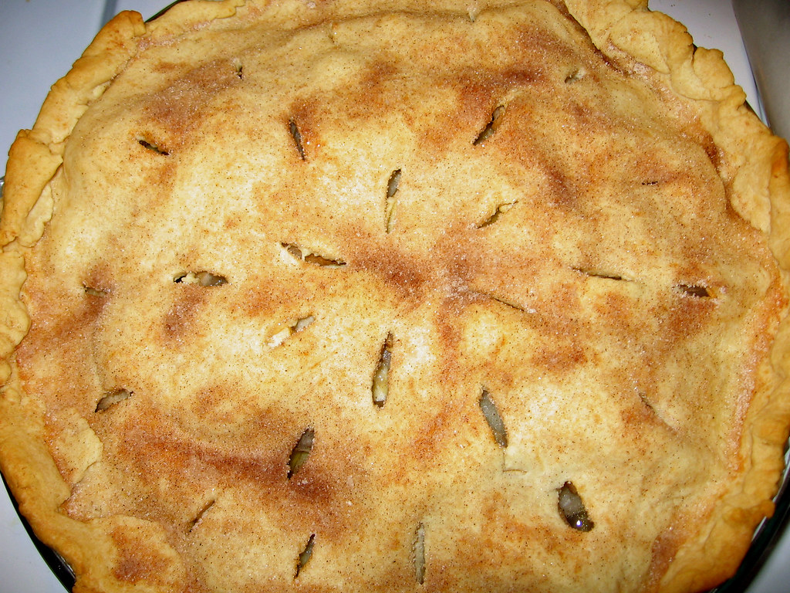

Home
Vanilla Pear Pie

Description
You might not believe it but vanilla and Pears go great together!! Pears are a fall fruit and rather than following everyone else with pumpkin this and pumpkin that why not make a Pear Pie.
This pies' heavenly flavor and aroma are to die for. By using vanilla bean instead of extract you enhance
the flavor of the pears without overwhelm their unique flavor!. This might end up your new favorite fall dessert.
Ingredients
- 3 pounds ripe but firm pears
- 3/4 cup sugar
- 1 vanilla bean
- dash of salt
- 43 grams arrow root or cornstarch
- 1 egg white
- 2 pie crusts (1 for bottom of pie and 1 for top)
- 1 teaspoon cinnamon (optional)
- Whipped topping (optional)
Steps
- Dice pears into 1/3 to 1/2 inc cubes
- Combine diced pears, sugar, salt, and the seeds from vanilla bean (throw in the pod as well) stir well.
- Set this aside to marinate for about 1 to to hours
- Roll out your 2 pie doughs into 12 inch circles. Place one in the bottom of a 9 inch deep pie dish.
- Lightly flour the second circle of dough and fold it into quarters wrap in plastic wrap place in pie dish and refrigerate for 1 to 2 hours.
- Preheat oven to 350 dregrees Fahrenheit
- Grab your marinated pears and remove the vanilla bean pod and drain the juice into a small sauce pan.
- Add your arrow root or cornstarch to the sauce paan and heat over medium heat until it starts to boil. Reduce heat to low and whisk non-stop until thickened.
- Pour over pears and mix well.
- Get you dough out of the fridge and pour the pear mixture into the pie plate.
- Open up your top dough and cut some designs in it for steam release.
- Brush the egg white around the edge of the pie plate dough. Roll the top up and place on top of pie and unroll.
- Use a fork or a roller to seal the top dough to the bottom dough
- Optional sprinkle cinnamon on top
- Put the pie on a sheet pan and place in oven and bake for about an hour until the top is golden brown and the fruit is tender and the pie is bubbling.
- Remove the pie from the oven and allow to cool completely (about 3 hours)
- Serve with whipped topping (optional)